Entrepreneurs close to home
The lecture opens with Elon Musk. Technology entrepreneurs like him are behind many of the things you use today. They came up with a technological idea, believed in it, gathered the resources, put in the effort and made it happen.

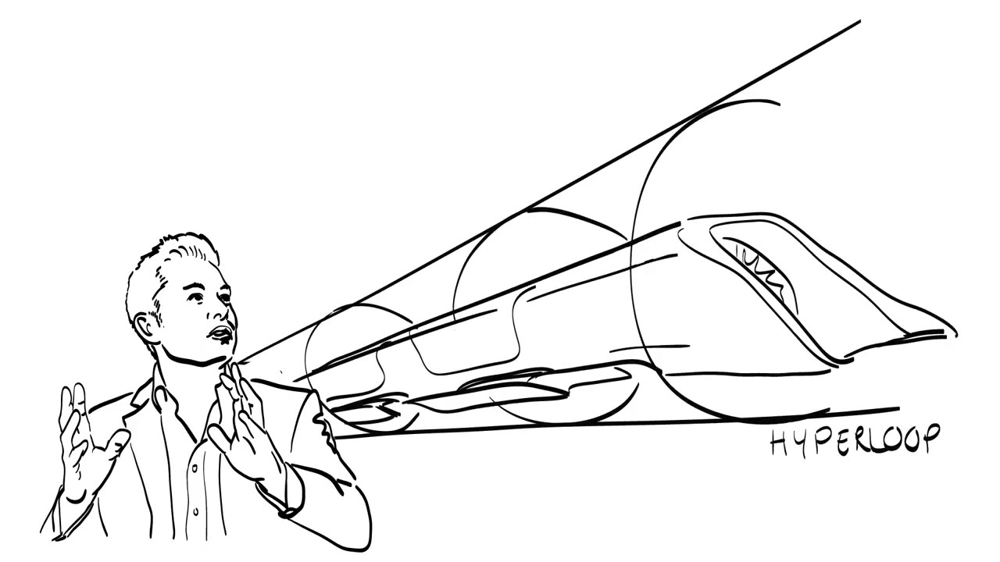
You do not have to look that far, though. Two examples come from Dutch universities. Cecile van de Waal, a TU/e alumna, simplifies user interfaces for 3D printing at the company Printr, so that a radical technology becomes usable for ordinary people. David Strik and Marjolein Helder, environmental scientists at Wageningen University and Research, developed a way to generate electricity from living plants. That work became Plant-e, a company that sells modular systems for sustainable electricity.

The rest of the video asks how people like these got started, what they needed along the way, and what you can learn from them. It answers by taking apart four myths.
Myth 1: they know exactly where they are going
The mythEntrepreneurs know exactly what they want and how to get there.
Think of the way to a successful venture as a journey. It has a starting point, stations where you can get off or stay on board, and an end. You can plan some stretches ahead. Very often you will change the route you first had in mind, and sometimes you have to go back.

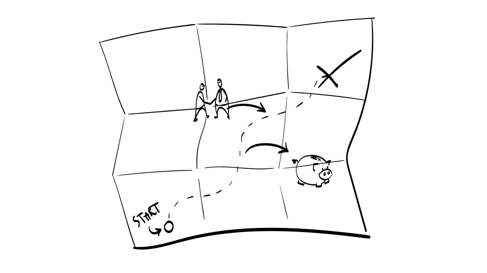
Four starting points
The journey does not even begin in one place. What differs is what you already have in hand: a technology, a customer, both, or neither. The lecture names at least four starts.
- You have a technology or an idea and you already know who will buy and use it. Plant-e can make electricity from plants, and that suits people who live off the grid in remote areas.
- You have no technology, but you know a problem you want to solve. Plastic garbage floats in the world's oceans. Imagine engineering a bacteria that eats it.
- You have a technology but do not know which need it serves. Generic radical technologies such as nanomaterials could go into health applications, industrial engineering or agriculture. Here your main task is to go out of the building and discover potential customers.
- You have neither. You have dreams and maybe a vague vision of what you want to achieve. This journey is likely to be the most complex. SpaceX is the example: many of its technological problems are unsolved, and it is unclear how many people or companies will use the service.

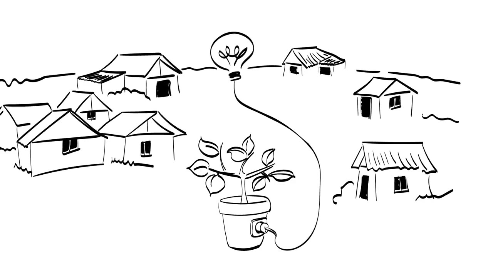

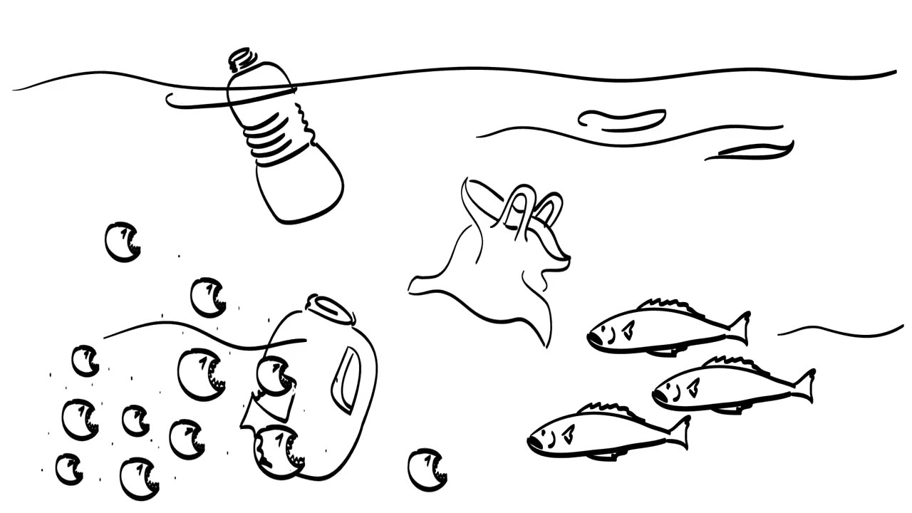

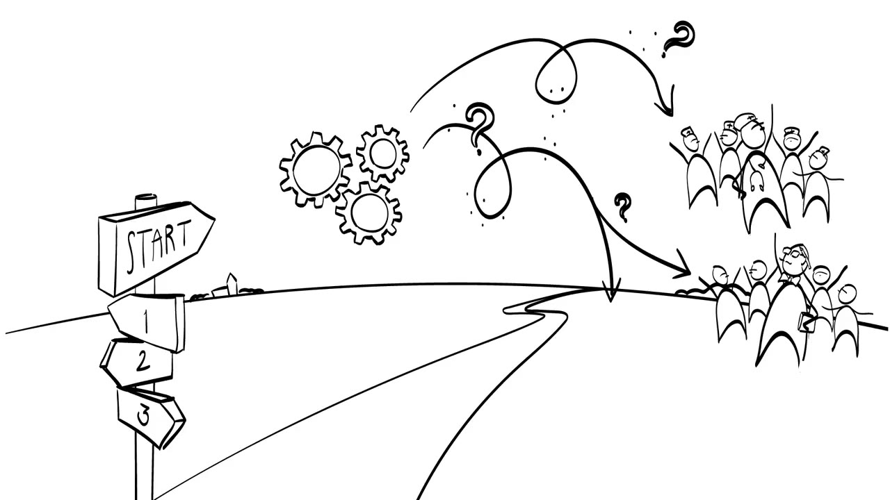

Three activities that keep you busy
Whichever start is yours, the same three activities will occupy you once you set off:
- searching for potential ideas and solutions around you,
- actively creating possible ideas, alternatives and solutions,
- sharpening those ideas by evaluating them critically and deciding which to pursue.
Scholars call these opportunity identification, opportunity creation and opportunity evaluation.
In this early phase, what you bring to the start matters a great deal. The lecture calls it your luggage: your knowledge (what you know about technology, for instance), your skills (social skills, for example) and your attitude (such as being proactive). Some luggage helps and some is a burden, and the remaining three myths are about telling them apart.

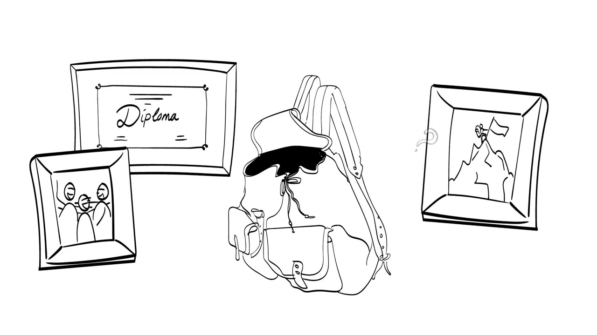
Myth 2: they drop out of college
The mythSuccessful entrepreneurs drop out of college and start right away.

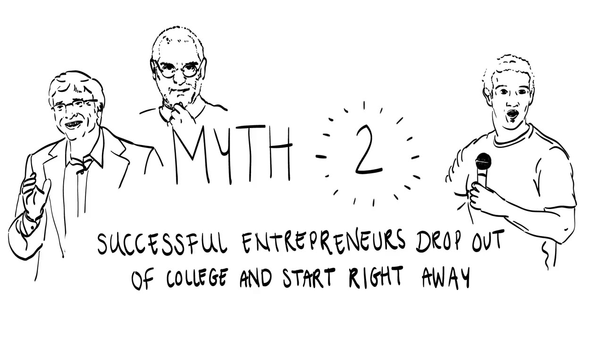
Bill Gates, Steve Jobs and Mark Zuckerberg come to mind. Research points the other way: higher education in technical and managerial sciences can boost the growth of tech ventures. Education gives you knowledge and skills. If you are an expert in your technology and your industry, you know where the problems are, so you also know where your technology might help.
Prior experience
Schooling is not the only useful thing to pack. Along the route you keep having to judge which direction to take, and that is where experience pays off. Studies of expert entrepreneurs show that people who have started several businesses evaluate ideas differently from first-timers, because they use different frameworks. If you have travelled parts of the journey before, you know which aspects of an idea deserve extra attention and which do not.
Novices look only for novelty. Experts ask whether the idea truly solves someone's problem, and whether it can be connected to a network in a specific ecosystem.
Myth 3: they work alone
The mythEntrepreneurs are suspicious about authority and find it difficult to work with others.

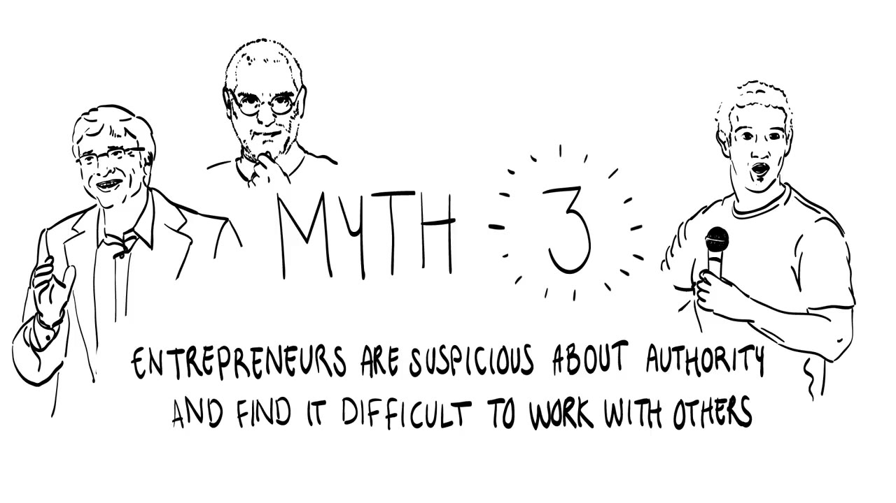
Bill, Steve and Mark usually stand in the limelight alone. Look closer and almost no great business idea is the work of one man or woman. When two ideas collide, the result can be a better idea, and great ideas often come out of interaction with significant others. Bill had Paul Allen. Steve had Steve Wozniak. Mark had his Harvard roommates.

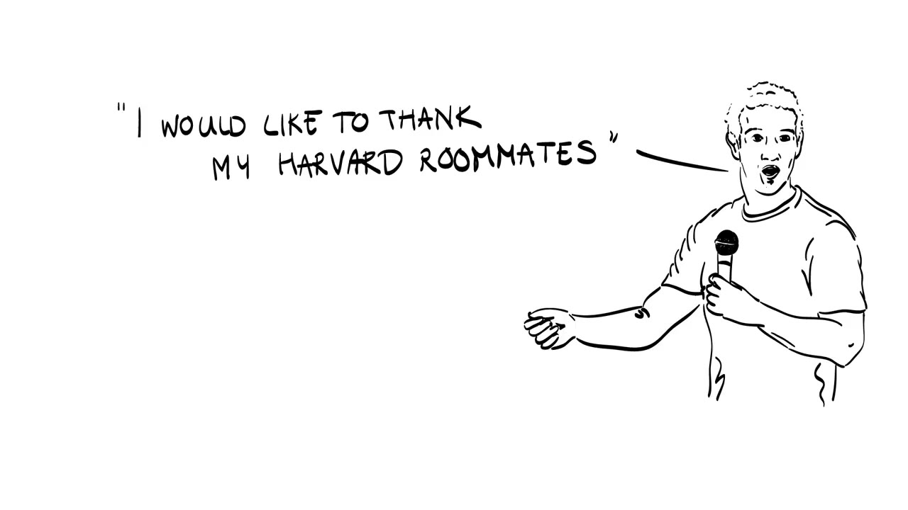
So social skills belong in your luggage. They cover three things: working in a team, sharing ideas with people outside the team, and selling. You sell your idea to investors and your product or service to customers. The lean startup methodology in particular tells you to go out of the building and talk to the main stakeholders of your venture early and often.

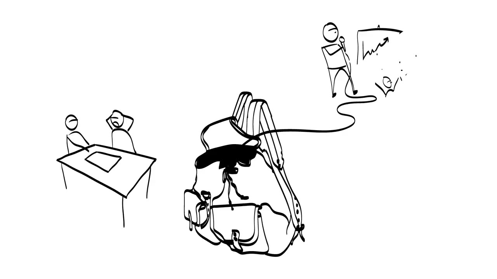
Three tests of your attitude
Besides knowledge and skills, your attitudes, motives, values and traits affect whether you can start a business. They are harder to see in a person, but they matter on the journey. The lecture suggests three tests.
Why do you want to be an entrepreneur?
Ask yourself why you want to start and what keeps you motivated. Are you in it for the money? Do you want to create value for a community? Do you want to change the world at large? Knowing your deeper drivers helps you make decisions along the way. The course offers a startup values test and a goals and values card game for this.

Are you willing to learn new things?
You will have to learn a lot. First business ideas often get reshaped substantially as the journey continues, and successful entrepreneurs show a high degree of learning orientation: a strong desire to develop yourself by acquiring new skills, mastering new situations and improving your competences. The course has a short test for this too.
How strongly do you believe in yourself?
A tech entrepreneur needs a strong belief in their own competences, a healthy dose of optimism, and resilience. Not everybody will be enthusiastic about your idea straight away. You will probably also have to change direction when a new application context emerges or when other people come on board.

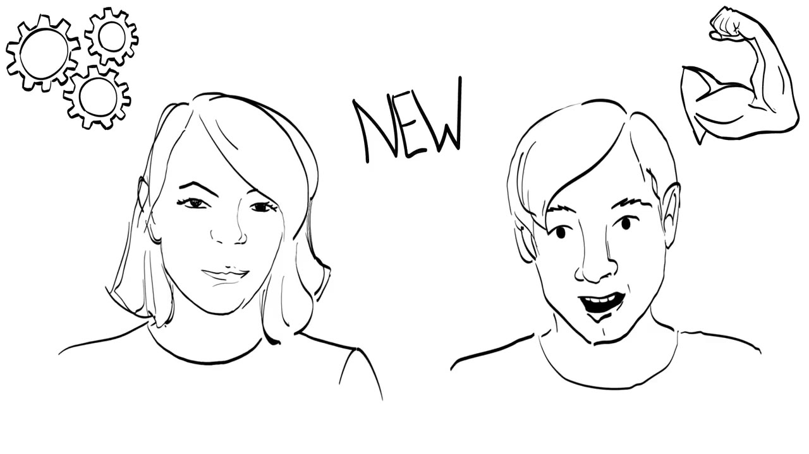

Myth 4: they do everything themselves
The mythEntrepreneurs have to know and do everything by themselves.
After all of this you might picture the technology entrepreneur as a jack or jackie of all trades. In an ideal world, maybe. But a jack of all trades is a master of none, and in reality more and more tech starters are teams. Many startups, independent or corporate, begin as a team. An investor's typical first question to a technology entrepreneur is "Tell me more about your team."

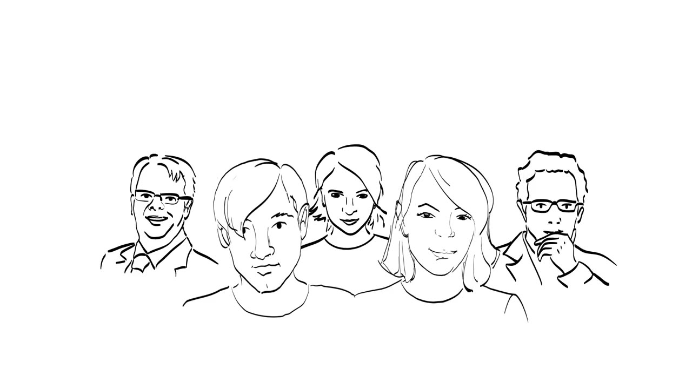
Forming a team means finding complementary skills and, at a deeper level, complementary motives and values. A team that manages this makes up for what one founder lacks in human capital (knowledge, skills, attitudes) and in social capital (access to specific networks). Your startup mates will still have to explore their own journey, just as you have done here.
Terms to know
- Entrepreneurial journey
- The lecture's picture of building a venture: a route with several possible starting points, stations and an end, on which you often change direction and sometimes go back.
- Opportunity identification
- Searching for potential ideas and solutions around you.
- Opportunity creation
- Actively creating possible ideas, alternatives and solutions.
- Opportunity evaluation
- Critically assessing ideas and solutions to decide which ones to pursue.
- Luggage
- What you bring to the start: knowledge, skills and attitude.
- Learning orientation
- A strong desire to develop yourself by acquiring new skills, mastering new situations and improving your competences.
- Human capital
- Knowledge, skills and attitudes.
- Social capital
- Access to specific networks.
- Going out of the building
- The lean startup advice to interact early and often with potential customers and other stakeholders.